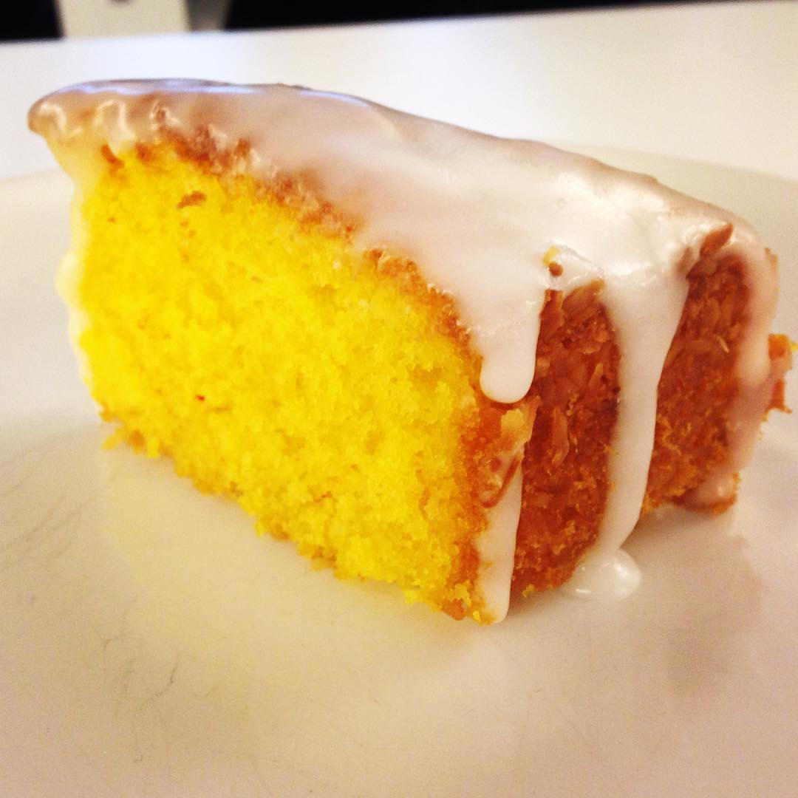

Day 3: Saftig saffranskaka
Saftig saffranskaka som är ljuvlig till julens fester och fikapauser!
Du behöver:
- matfett till formen
- ströbröd till formen
- 200 g smör eller margarin
- 1/2 g saffran
- 3 dl strösocker
- 2 ägg
- 1 1/2 dl mjölk
- 4 dl vetemjöl (4 dl motsvarar 240 g)
- 2 tsk bakpulver
Gör så här:
- Sätt ugnen på 175˚C.
- Smörj och bröa en bakform med löstagbar kant, ca 24 cm i diameter.
- Smält matfettet.
- Stöt saffranet i en mortel med 1 msk av sockret. Blanda det med det smälta matfettet.
- Vispa ägg och resten av sockret poröst. Rör ner matfettet och mjölken. Blanda mjölet med bakpulvret och vänd ner det i smeten. Häll smeten i formen.
- Grädda i nedre delen av ugnen 40-45 minuter.
- Låt kakan stå i formen på ett galler ca 5 minuter innan kanten på formen lossas.
- Servera gärna kakan med rårörda hallon och vispad grädde.
Allergiinformation:
- Kakan innehåller ägg.
- Gör glutenfri: byt ut mjölet mot glutenfritt finmjöl.
- Gör laktosfri: använd laktosfritt matfett och laktosfri mjölk. Servera med laktosfri grädde.
- Gör mjölkproteinfri: använd mjölkfritt matfett. Byt ut mjölken mot havre-, soja- eller risalternativ. Servera med mjölkfritt vispbart gräddalternativ.